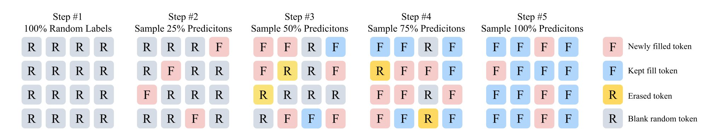
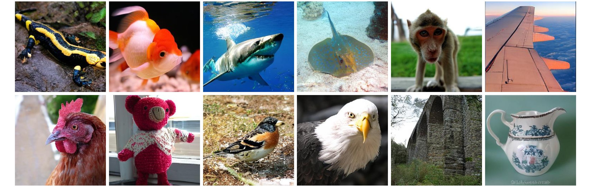
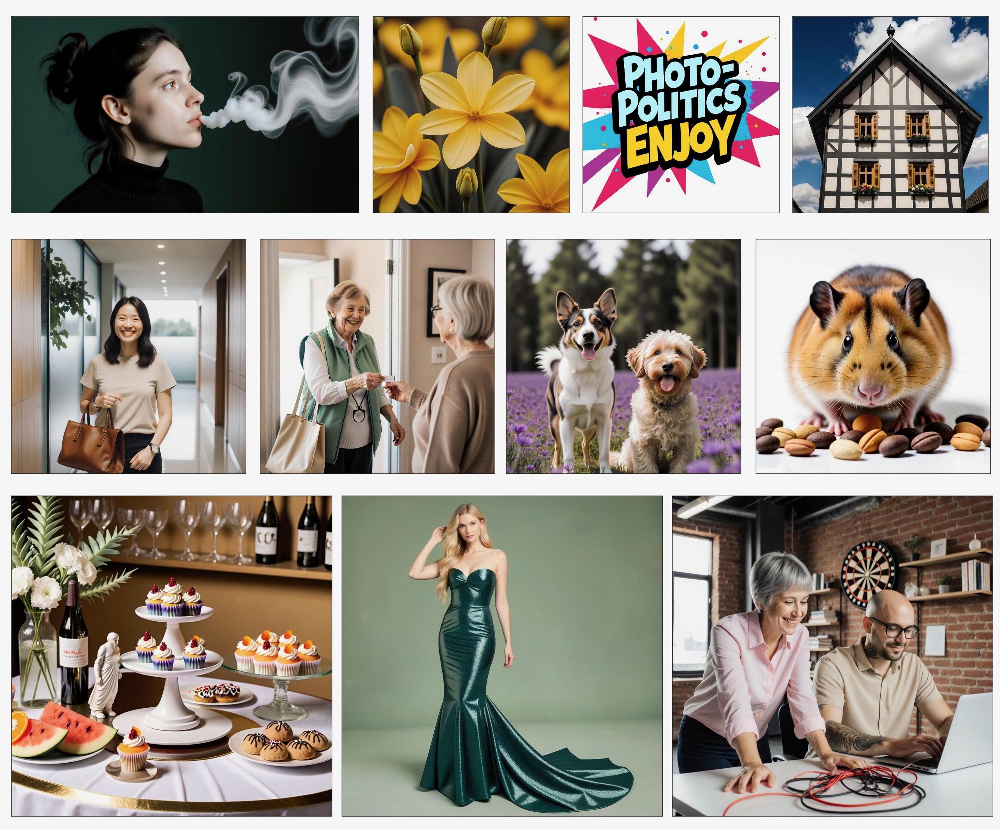

GRN is a new visual synthesis paradigm that is neither diffusion nor autoregressive. It allocates computation adaptively by sample complexity and progressively refines outputs globally.
GRN starts from a random token map, then iteratively fills and refines tokens globally. Compared with fixed-compute generation, this process adapts computation to content complexity and improves synthesis quality progressively.

Generation begins from an initially random token layout.
The model randomly selects more confident predictions at each step.
All input tokens are refined together rather than generated one by one.
Entropy-guided sampling spends more steps where content is harder.
Uniform compute on all samples does not reflect complexity variance. GRN addresses this with adaptive refinement.
Lossy tokenization and accumulated prediction error can hurt quality. GRN solves this with better tokenization.
Either diffusion nor autoregressive — GRN is a third way. 🧠 Refines globally like an artist. ⚡ Generates adaptively by complexity. 🏆 New SOTA across image & video. The visual generation paradigm just got rewritten.
GRN demonstrates strong class-conditional generation quality and reconstruction performance. The official implementation reports state-of-the-art results and provides checkpoints and scripts for reproducible class-to-image experiments.

The GRN pipeline supports straightforward text-to-image inference with configurable guidance scale, temperature, inference steps, and output resolution. Official examples show 1024x1024 generation from a single prompt.

GRN scales beyond class-to-image and text-to-image toward text-to-video, while preserving the same refinement-first philosophy: globally update representations and allocate compute adaptively where complexity requires it.
As we observe clear scaling behavior in GRN, we are encouraged to scaling GRN from 2B to 8B parameters for the most challenging video generation tasks.
Apart from text-to-video, GRN-8B also supports image-to-video generation.
If you find this work useful, please cite:
@misc{han2026grn,
title={Generative Refinement Networks for Visual Synthesis},
author={Jian Han and Jinlai Liu and Jiahuan Wang and Bingyue Peng and Zehuan Yuan},
year={2026},
eprint={2604.13030},
archivePrefix={arXiv},
primaryClass={cs.CV},
url={https://arxiv.org/abs/2604.13030}
}